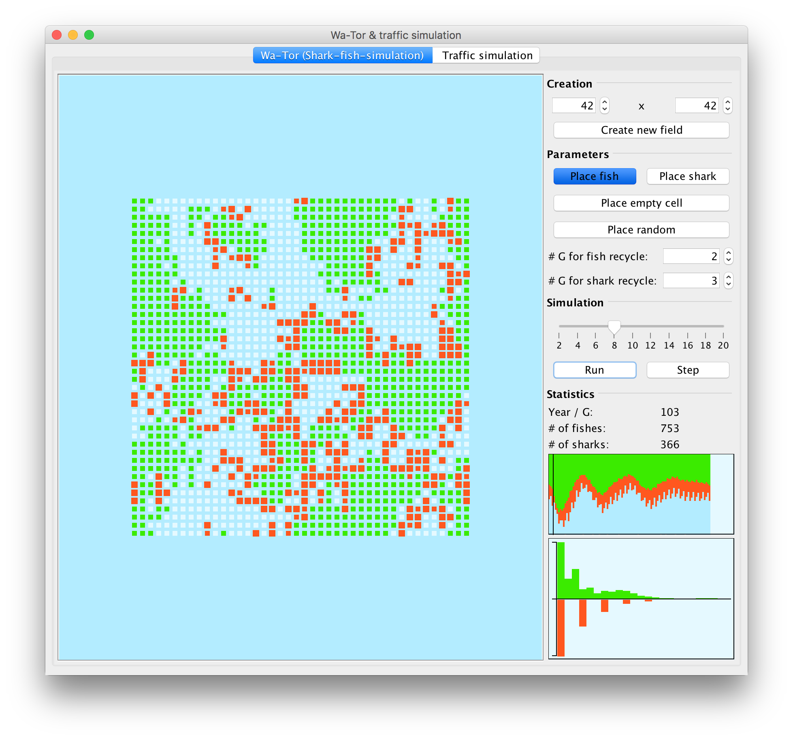

- Table of Contents
- Newton fractal
- Wa-Tor simulation
- Traffic simulation
- Git repo of Newton fractal
- Git repo of WaTor- & Traffic simulation application
There are some mandatory programming »projects« for every computer scientist: a calculator, sorting algorithms and »numerical functions« - like faculty, the LCM (lowest common multiple) or GCD (greatest common divisor), the Fibonacci series and others. But another very popular project is Conway's Game of Life which comes from the field of cellular automaton.
During my time at university I participated at a course which was about dealing with problem modeling and simulating the problems to study the behaviour. Although this was a math course it was very interesting. There we took a look at problems like the Google PageRank and eigenvalues, Fourier transform (FFT and DFT) and also at the models and simulations shown in the following. Because they were so exciting I implemented them as an application.
Newton fractal
We all know Newton's method for finding approximations for roots of non-linear equations. When applying this method to complex numbers in the complex pane (cartesian coordinate system) and apply Newton's method to every point and color this point according to the root it converges to one gets really beautiful images (see screenshots below).
The created application can be found in the Git repo here. It simply provides an input for the formula to »calculate« the image for and performs internally a numerical derivation since this was much easier to implement than a CAS system.
{kind=link}
{kind=link}
{kind=link}
{kind=link}
{kind=link}
WaTor simulation
The Wa-Tor simulation is a predators and prey simulation much like Conway's Game of Life where an initial population of sharks and fishes developes over time. The development is based on rules (e.g. a fish moves randomly for every time step). It can be observed that those systems tend to arrive in stable states.
The created application can be found in the Git repo here. The main user interface looks like:
A screenshot of the developed Java application to simulate predators and prey evolution.
The application is structured pretty simple: on the left the cyclic world is displayed which is divided into distinct cells. The right shows the controls (top) and statistics (bottom). Animals (fish or shark) can be placed manually or automatically based on a probability. If the simulation is started the rules are applied and the progres is shown. Here it can be seen that the ratio of fishes and sharkes oscillates initially but then flattens out to a stable relation.
Traffic simulation with the Nagel–Schreckenberg model
We also investigated the Nagel–Schreckenberg model which is a pretty cool tool: it allows to model traffic flow on highways (single-lane street) and motorways (multi-lane street) as a cellular automata and simulate them based on simple rules like »a car always accelerates«. It also considers thrifting which causes the velocity to be decreased based on a probabilistic model.
The Git repo here contains also the source for this application. In fact it is directly integrated into the Wa-Tor simulation. Some screenshots are:
{kind=link}
{kind=link}